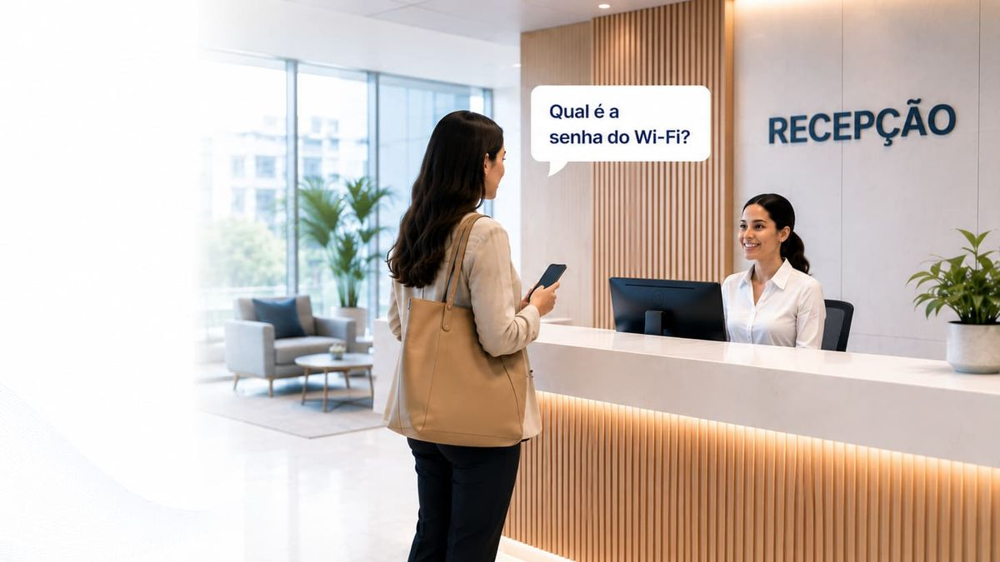

- O que é: uma página de entrada que controla quem usa o Wi-Fi de visitantes.
- Como funciona: o firewall segura a navegação, leva o visitante até o portal e só libera depois da identificação.
- Para que serve: separar visitantes da rede interna, saber quem esteve conectado e quando, e registrar o aceite dos termos.
- O que não precisa fazer: guardar o histórico de navegação do visitante.
Como funciona um captive portal, passo a passo
Para o visitante, tudo leva poucos segundos. Por trás, acontece isto:
- O visitante escolhe a rede de visitantes. Normalmente é uma rede (SSID) aberta, separada da rede dos funcionários e sem senha compartilhada.
- O firewall segura a navegação. Enquanto o aparelho não estiver autorizado, o firewall bloqueia o tráfego e redireciona a primeira tentativa de acesso para a página do portal.
- O celular abre o portal sozinho. iPhone e Android testam a conexão assim que entram em uma rede. Quando percebem o redirecionamento, abrem a janela do portal automaticamente.
- O visitante se identifica. Pode ser um código enviado por WhatsApp ou SMS, um login social ou um cadastro. É aqui também que ele aceita os termos de uso.
- O acesso é liberado e registrado. O portal avisa o firewall que aquele aparelho pode navegar. O início e o fim da sessão ficam registrados (o chamado accounting), prontos para consulta.
Num portal bem configurado, a etapa 4 é a única que o visitante percebe. O resto é infraestrutura.
Para que serve um captive portal na empresa
A senha do Wi-Fi colada na recepção resolve o acesso, mas não resolve mais nada. O captive portal cobre quatro pontos que a senha compartilhada deixa em aberto:
- Segurança. O visitante navega em uma rede separada, normalmente uma VLAN própria, sem enxergar PDVs, servidores e dispositivos internos.
- Rastreabilidade. Cada sessão fica ligada a uma pessoa identificada e a um aparelho. Se alguém perguntar quem estava na rede em determinado horário, existe resposta.
- Conformidade. O aceite dos termos e o registro da conexão ficam documentados, o que apoia a empresa diante da LGPD e do Marco Civil da Internet.
- Menos chamado para a TI. Ninguém precisa pedir, trocar ou repassar senha. O visitante conecta, se identifica e navega.
Captive portal interno ou externo: qual a diferença?
Firewalls e controladoras Wi-Fi costumam trazer um portal embutido. A alternativa é um portal externo, hospedado em nuvem, que conversa com o firewall. Os dois funcionam. A diferença está no que cada um entrega:
| Critério | Portal interno | Portal externo |
|---|---|---|
| Onde fica | No próprio firewall ou controladora | Em um serviço na nuvem, integrado ao firewall |
| Identificação | Usuário e senha, voucher ou aceite simples | Código por WhatsApp ou SMS, login social, cadastro |
| Registros | Ficam no equipamento; a retenção depende do armazenamento de logs | Centralizados, pesquisáveis e exportáveis |
| Várias unidades | Configuração repetida em cada local | Uma gestão para todas as unidades |
| Manutenção | Equipe de TI da empresa | Fornecedor do portal |
Regra prática: em uma rede pequena, com pouca exigência de auditoria, o portal interno resolve. Com várias unidades, visitantes em volume ou necessidade de comprovar quem acessou, o externo costuma compensar.
Captive portal, LGPD e Marco Civil da Internet
Ao pedir dados para liberar o Wi-Fi, a empresa passa a tratar dados pessoais, e o captive portal entra no escopo da LGPD (Lei 13.709/2018). Os princípios que mais pesam aqui são finalidade e necessidade: coletar só o que é preciso para liberar e atribuir o acesso, e deixar claro para que serve.
O Marco Civil da Internet (Lei 12.965/2014) define registro de conexão como a data e a hora de início e de término de uma conexão, sua duração e o endereço IP usado. É esse tipo de registro, e não o conteúdo da navegação, que interessa guardar.
- Peça só o necessário para identificar o visitante. Um celular verificado costuma bastar.
- Separe o aceite dos termos de qualquer autorização de marketing.
- Registre a conexão (quem, qual aparelho, entrada e saída), não a navegação.
- Deixe termos de uso e política de privacidade acessíveis no próprio portal.
Este conteúdo é informativo e não substitui orientação jurídica. Para definir prazos de retenção e bases legais, envolva o jurídico ou o encarregado de dados (DPO) da empresa.
O que avaliar antes de escolher um captive portal
- Compatibilidade: funciona com o firewall e os access points que você já tem?
- Identificação forte: valida o celular por código, ou aceita qualquer e-mail digitado?
- Isolamento: o tráfego de visitantes sai por uma rede separada da interna?
- Auditoria: os registros são fáceis de consultar e exportar quando alguém pedir?
- Privacidade: o fornecedor deixa claro o que registra e o que não registra?
- Implantação: precisa de servidor local, link novo ou projeto? Em quanto tempo entra no ar?
A gente mostra a configuração e o painel de auditoria em uma conversa rápida.
Como o wi-fi.now faz isso no FortiGate
O wi-fi.now é um captive portal externo feito para o FortiGate. Ele usa o firewall que a empresa já tem: sem servidor local, sem RADIUS local, sem link novo. A configuração entra por um script pronto e o portal fica no ar em minutos.
O visitante se identifica com um código enviado por WhatsApp ou SMS. Cada sessão fica ligada a esse celular e ao aparelho, com horário de entrada e de saída. Sites e URLs acessados não são registrados. Os access points podem ser de qualquer fabricante, desde que estejam conectados ao FortiGate.
Veja o passo a passo de implantação e os recursos de segurança e conformidade.
Perguntas frequentes sobre captive portal
Captive portal é seguro?
O portal em si é uma etapa de identificação. A segurança vem do conjunto: rede de visitantes separada da interna, identificação verificada e registro das sessões. Um portal que só pede para aceitar os termos, sem validar ninguém, protege pouco.
Preciso de um servidor para ter captive portal?
Não necessariamente. O portal interno roda no próprio firewall. Portais externos em nuvem, como o wi-fi.now, também dispensam servidor local: a integração é feita direto com o firewall.
Captive portal registra os sites que o visitante acessa?
Depende de como é configurado, e para registrar a conexão isso não é necessário. O wi-fi.now registra só quem acessou, com qual dispositivo, quando entrou e quando saiu.
Por que o captive portal não abre sozinho no celular?
Geralmente porque o aparelho não percebeu o redirecionamento, por exemplo quando há um DNS privado configurado ou quando o primeiro acesso é a um site HTTPS. Desconectar e reconectar à rede, ou abrir um endereço sem HTTPS, costuma resolver.